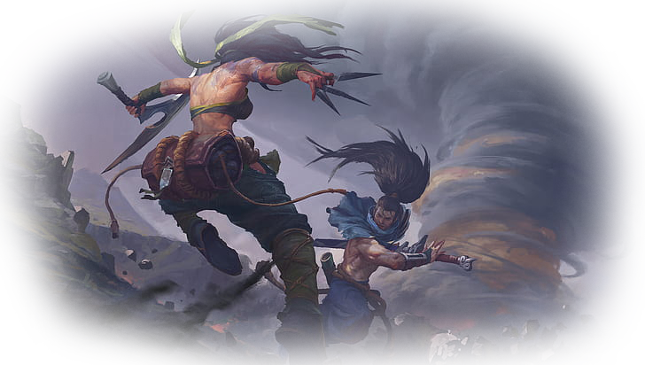
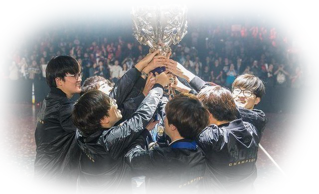

ประวัติเกม
เริ่มจาก Riot Games
หากเราพูดถึงชื่อค่ายเกมพับลิชเชอร์ยักษ์ใหญ่ของโลกอย่าง "Riot Games"
เชื่อว่าเกมเมอร์น้อยคนจะไม่รู้จักนะ พวกเขามีเกมเอกที่โลดแล่นอยู่ในแวดวงอีสปอร์ตชั้นแนวหน้าอย่าง
Valorant แต่จุดกำเนิดที่แท้จริงของค่ายนี้ มาจากเกมที่มีชื่อว่า "League of Legends" เกมแนว MOBA
ที่เปิดให้บริการมาตั้งแต่ปี 2009 ในวันนี้ผมจะมาพาทุกท่านย้อนอดีตกลับไปหาจุดเริ่มต้น
และความเป็นมาของหนึ่งในเกมที่ยืนหยัดข้ามยุคสมัย และยังเติบโตมาได้จนถึงทุกวันนี้ว่า
เบื้องหลังความสำเร็จของ "League of Legends" พวกเขาต้องผ่านอะไรกันมาบ้าง

เด็กจบใหม่ไฟแรง
League of Legends นั้นมีจุดเริ่มต้นจากการเป็นโปรเจกต์ของเด็กจบใหม่ 2 คน
"Brandon Beck" และ Marc "Tryndamere" Merrill ได้ยินชื่อแล้วคุ้นๆ มั้ยครับ?
มีเกร็ดมาฝากเล็กน้อยครับ คือสมัย "Marc Merrill" ยังเป็นเด็กเนิร์ดเล่นเกม
เขาติดเกมออนไลน์ที่มีชื่อว่า EverQuest และเขาสร้างตัวละครของเขาที่ใช้ชื่อว่า
Tryndamere และใช้มันเรื่อยมา เป็นทั้งฉายาในโลกออนไลน์ของตัวเอง จนกระทั่งเขาสร้าง "LOL"
ก็เลยมีการสร้าง แชมเปียน หรือก็คือตัวละครฮีโร่ของเกมนี้ขึ้นมาให้เกียรติเขา และที่น่าสนใจอีกอย่างนึงก็คือ
ภายในเนื้อเรื่องของจักรวาล LOL เนี่ย Tryndamere จะมีภรรยาเป็นแชมเปียนอีกตัวที่ชื่อ Ashe ซึ่งภรรยาตัวจริงของ
Marc Merrill ก็ชื่อ Ashely ครับ เป็นไงล่ะ "โรแมนติก" ซะงั้น
ก่อตั้ง
Brandon และ Marc เนี่ย ก่อตั้ง Riot Games เมื่อปี 2006 และเริ่มต้นเดินทางระดมทุนเพื่อของบมาพัฒนาเกมที่มีชื่อว่า
League of Legends จากกลุ่มทุนต่างๆ จนในที่สุด พวกเขาได้เงินมาประมาณ 8 ล้านเหรียญสหรัฐ
ความตั้งใจของพวกเขาก็คือการอยากจะสร้างเกมอย่าง Dota ซึ่งในตอนนั้นมีสถานะเป็นเพียงแค่
mod ของเกม Warcraft III เท่านั้นเอง โดยการเล่นพื้นฐานของ LOL นั้นเหมือนกัน
เป็นเกมมัลติเพลเยอร์ที่ผู้เล่นทีมละ 5 คน ต้องมาปะทะกันในแผนที่ โดยแต่ละฝ่ายจะต้องทำลายป้อมปราการของศัตรู
ก่อนจะบุกตะลุยเข้าทำลายฐานทัพฝ่ายตรงข้ามให้ได้ เพียงแต่เกมใหม่ที่พวกเขาจะพัฒนานี้
จะต้องมีการปรับปรุงต่อยอดจากแรงบันดาลใจต้นแบบอย่าง Dotaแต่ต้องมีความสมบูรณ์กว่า
เปิดให้เล่นฟรี ไม่มีโหมดเนื้อเรื่อง เล่นออนไลน์ และหากินได้ระยะยาว
หลังจากพัฒนาตัวเกมมาได้สามปี LOL ก็เปิดให้บริการในปี 2009

สู่ตลาดโลก
อย่างไรก็ตามครับ LOL ในยุคแรกๆ เนี่ยก็มีปัญหาเหมือนเกมทั่วไปก็คือ มันมีความขาดๆ เกินๆ ในหลายจุดครับ
เช่น กราฟิกก็ดูตกยุค ตัวแชมเปียนก็บาลานซ์ไม่ได้ดี แต่คอร์เกมเพลย์มันมีความสนุกอยู่
ทำให้ทีมงานสามารถหยั่งขายืนได้ในวงการเกมช่วงนั้น ตัวเกมสามารถสร้างคอมมูนิตี้ที่เหนียวแน่นขึ้นมาได้
และเริ่มมีการแข่งขันอีสปอร์ตระหว่างกลุ่มผู้เล่นของเกมขึ้นมาด้วยตัวเอง
แต่หลังจากนั้นทัวร์นาเมนต์ใหญ่ชิงแชมป์โลกครั้งแรกของตัวเกมที่ชื่อว่า League of Legends World Championship
ก็เกิดขึ้นในปี 2011 ทีมพัฒนาก็เริ่มมั่นใจว่าพวกเขามีเพชรอยู่ในมือหลังจากผ่านการแข่งขันชิงแชมป์โลกครั้งแรกไปแล้ว
ตัวเกมยังถูกพัฒนาและปรับปรุงต่อไป การแข่งขันก็ยังถูกจัดขึ้นอย่างต่อเนื่อง จนกระทั่งในปี 2013 Riot
ก็ได้สร้างมาตรฐานใหม่ให้กับวงการอีสปอร์ต นั่นคือการเปิดตัว League of Legends Championship Series
หรือว่า LCS ในทวีปอเมริกาและยุโรป มันไม่ใช่ลีกการแข่งขันเกมอีสปอร์ตอย่างเป็นทางการลีกแรก
แต่มันเป็นลีกที่มาแรงที่สุดในตอนนั้นครับ มันคือการวางโครงสร้างแม่แบบการแข่งขันอย่างเป็นระบบให้กับอีกหลายภูมิภาคที่จะเติบโตขึ้น
และให้หลายเกมที่จะก้าวเท้าเข้าสู่ตลาดอีปสอร์ตหลังจากนั้นดูเป็นตัวอย่าง เพราะมันส่งผลทั้งด้านการตลาดที่มีประสิทธิภาพ
และสร้างกระแสความนิยมของเกมให้กระจายไปทั่วโลกได้จริงแน่นอนครับ ระบบลีกระดับภูมิภาคทำให้เกมขยายตลาดมาสู่เอเชียด้วย
อย่างที่จีนกระแสของเกมก็บูมมาก และให้กำเนิดสตาร์ดังหน้าใหม่อย่าง "เจียน ซี่ฮ่าว" หรือ "Uzi" จากประเทศจีน
และหนึ่งผู้เล่นที่จะกลายเป็นตำนานอย่าง "อี ซัง ฮยอก" (Lee Sang hyeok) หรือ Faker จากประเทศเกาหลี
ผู้เล่นดาวรุ่งทั้งสองทำผลงานได้อย่างโดดเด่น และเหมือนโชคชะตาฟ้าลิขิตมาอย่างกับหนังครับ
ทีมของ Uzi และ Faker ต้องมาพบกันในนัดชิงชนะเลิศของศึก World Championship ปี 2013 ก่อนที่ทีมของ Faker
จะเป็นฝ่ายกำชัยชนะ และเริ่มต้นหน้าประวัติศาสตร์ของทีมจากแดนกิมจิ ให้เรืองอำนาจต่อเนื่องมาอีกยาวนาน
นับตั้งแต่ปี 2013 ไปจนถึง 2017 ทีมจากประเทศเกาหลีทั้งเป็นคู่ชิง และครองแชมป์ League of Legends World Championship
มาอย่างต่อเนื่อง และถึงแม้ปัจจุบันการแข่งขันของตัวแทนจากแต่ละภูมิภาคจะสูสีขึ้นแล้ว แต่โดยรวม
ทีมจากทวีปเอเชียก็ยังถือว่าทำงานได้ดีกว่าอย่างเห็นได้ชัด